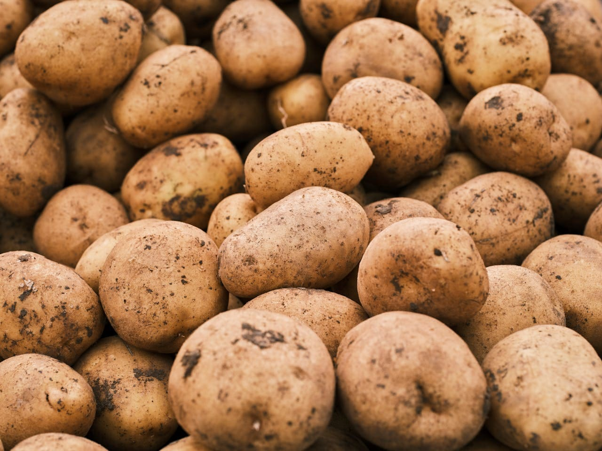
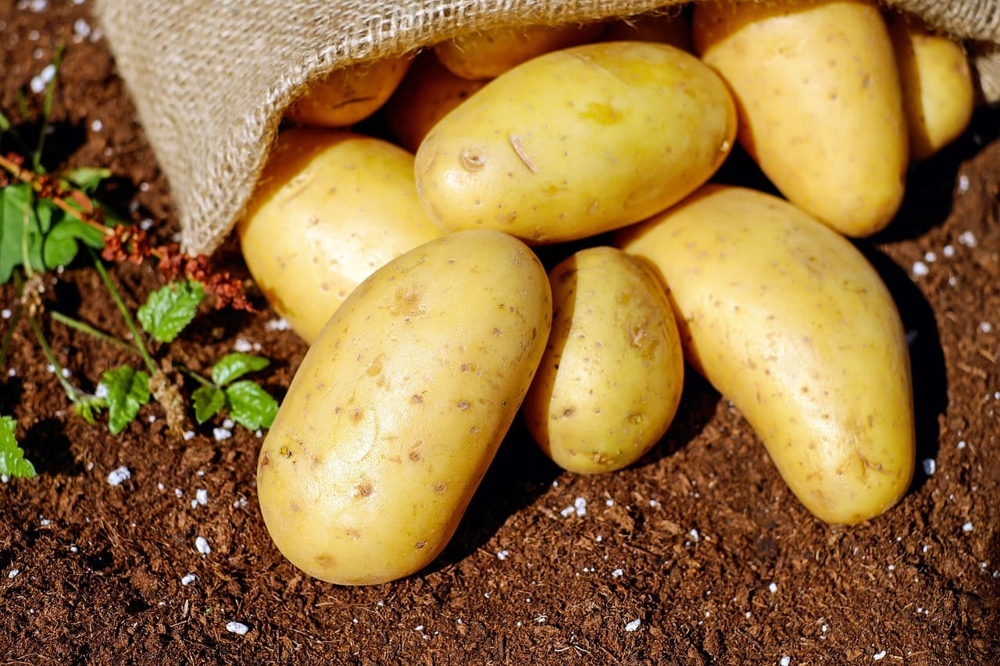
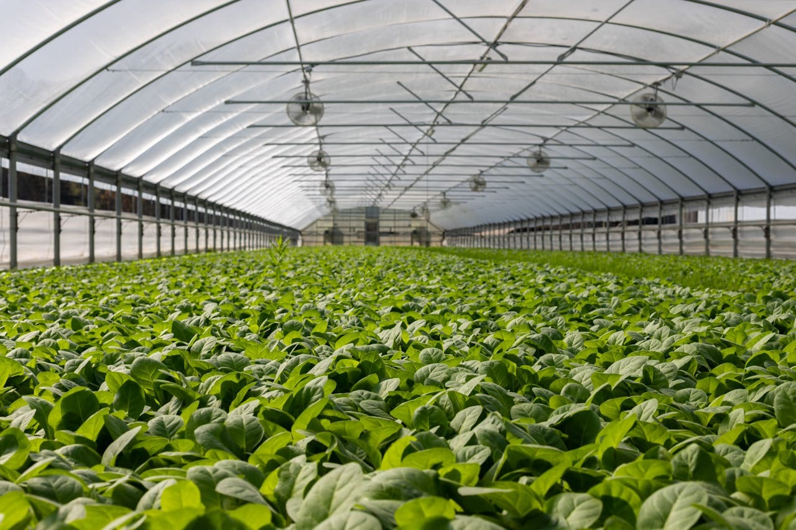
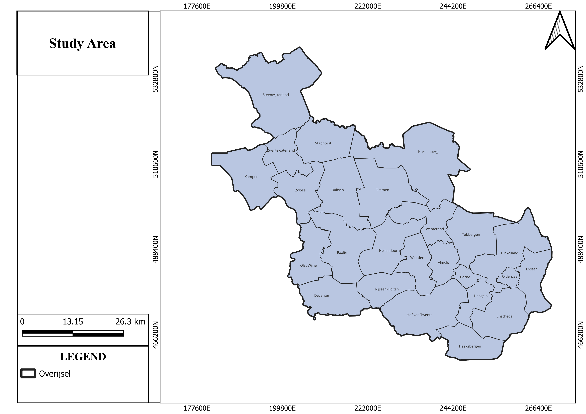

Introduction & Study Area

Image credit: Engin Akyurt, Pexels (Creative Commons)
1. Organic Farming
- A method of crop production that avoids synthetic fertiliser's, pesticides, and genetically modified organisms (GMOs)1.
- Relies instead on natural processes like crop rotation, composting, and biological pest control2.

Image credit: Couleur, Pixabay (Creative Commons)
2. Our Idea
- We hypothesise that organic potato farming consumes less energy and produces fewer GHG emissions per unit area compared to highly intensive farming. This assumption is based on,
- Reduced synthetic fertiliser use (lower N₂O emissions)3.
- Less intensive tillage (lower soil disturbance and CO₂ release)4.
- Greater reliance on organic matter (improving soil structure and carbon sequestration)5
- However, organic farming may face challenges such as lower yields and higher susceptibility to diseases like late blight, which could influence overall sustainability6.

Image credit: Mark Stebnicki, Pexels (Creative Commons)
3. Intensive Farming
- A high-input agricultural system that uses synthetic fertilisers, chemical pesticides, and mechanised processes to maximise yields7.
- Produces gases such as carbon dioxide (CO₂), methane (CH₄), and nitrous oxide (N₂O) that contribute to global warming7.
- Fuel Consumption: Tractors and harvesters run on fossil fuels, emitting CO₂8.
- Fertiliser Production: Synthetic nitrogen fertilisers require energy-intensive manufacturing (Haber-Bosch process), contributing to CO₂ emissions9.
- Nitrous Oxide (N₂O) Emissions: Excess nitrogen from fertilisers is converted into N₂O, a potent GHG (~300x stronger than CO₂)10.

4. Study Area: Overijssel
- Agricultural Significance: A key region for Dutch potato production.
- The region is known for its potatoes, sugar beets, cereals (wheat, barley), and maize11.
- Diverse Farming Practices: Mix of organic and intensive farming allows for comparative analysis.
- Climate & Soil Variability: Represents typical conditions for Northwest European agriculture.
5. Selected Crop: Potato
- High Economic & Nutritional Value: the Netherlands ranks among the world's top 10 potato producers, with a harvest in 2007 of 7.2 million tonnes12. 25% of the Dutch arable land is used for producing potatoes, with an average yield of 45 tonnes per hectare13.
- High Input Requirements: The potato sector is highly mechanised and demand significant fertiliser, water, and pest control, making them ideal for comparing farming systems.
- Susceptibility to Diseases: Late blight (Phytophthora infestans) is a major concern, especially in organic farming6.
References
- Reeve, J., Hoagland, L., Villalba, J., Carr, P., Atucha, A., Cambardella, C., Davis, & Delate, K. (2016). Organic farming, soil health, and food quality: considering possible links. In Advances in agronomy (pp. 319-367). https://doi.org/10.1016/bs.agron.2015.12.003
- Baker, B. P., Green, T. A., & Loker, A. J. (2019). Biological control and integrated pest management in organic and conventional systems. Biological Control, 140, 104095. https://doi.org/10.1016/j.biocontrol.2019.104095
- Šarauskis, E., Masilionytė, L., Juknevičius, D., Buragienė, S., & Kriaučiūnienė, Z. (2019). Energy use efficiency, GHG emissions, and cost-effectiveness of organic and sustainable fertilisation. Energy, 172, 1151-1160. https://doi.org/10.1016/j.energy.2019.02.067
- Rutkowska, B., Szulc, W., Sosulski, T., Skowrońska, M., & Szczepaniak, J. (2018). Impact of reduced tillage on CO 2 emission from soil under maize cultivation. Soil and Tillage Research, 180, 21-28. https://doi.org/10.1016/j.still.2018.02.012
- Rani, Shalu & Johar, Vishal. (2024). Organic Farming: A way forward for sustainable development. http://dx.doi.org/10.58532/V3BCAGP1CH4
- Ivanov, A. A., Ukladov, E. O., & Golubeva, T. S. (2021). Phytophthora infestans: An Overview of Methods and Attempts to Combat Late Blight. Journal of fungi (Basel, Switzerland), 7(12), 1071. https://doi.org/10.3390/jof7121071
- Intensive farming | EBSCO. (n.d.). EBSCO Information Services, Inc. | www.ebsco.com. https://www.ebsco.com/research-starters/agriculture-and-agribusiness/intensive-farming
- Alemanno, R., Rossi, P., Monarca, D., & Bencini, A. (2025). Evaluation of tractor performance, efficiency and fuel consumption in vineyard activities. Scientific Reports, 15(1). https://doi.org/10.1038/s41598-025-93526-z
- Kyriakou, V., Garagounis, I., Vourros, A., Vasileiou, E., & Stoukides, M. (2019). An electrochemical Haber-Bosch process. Joule, 4(1), 142-158. https://doi.org/10.1016/j.joule.2019.10.006
- Xu, X., Xu, Y., Li, J., Lu, Y., Jenkins, A., Ferrier, R. C., Li, H., Stenseth, N. C., Hessen, D. O., Zhang, L., Li, C., Gu, B., Jin, S., Sun, M., Ouyang, Z., & Mathijs, E. (2023). Coupling of crop and livestock production can reduce the agricultural GHG emission from smallholder farms. iScience, 26(6), 106798. https://doi.org/10.1016/j.isci.2023.106798
- CBS Statline. (n.d.). https://opendata.cbs.nl/statline/#/CBS/en/dataset/7100eng/table?dl=5351A
- APA Citation: Pinckaers, M. (2008, January 23). Frozen Potato Products: Netherlands. USDA Foreign Agricultural Service, GAIN Report Number NL8002. Retrieved from https://apps.fas.usda.gov/gainfiles/200801/200801328.pdf
- Food and Agriculture Organization of the United Nations. (n.d.). Europe: Potato production, 2007. Food and Agriculture Organization of the United Nations. Retrieved April 10, 2025, from https://www.fao.org/4/i0500e/i0500e03e.pdf
Home
Comparison
Insights
Discussion
About Us
A